intervoice
【コラム＆ブログ】WordPress更新マニュアル
2024.7.8 更新
メニュー
コラム＆ブログを追加する
- 画面上部の「新規投稿を追加」をクリックします。
- ▼「コラム＆ブログ」新規登録画面
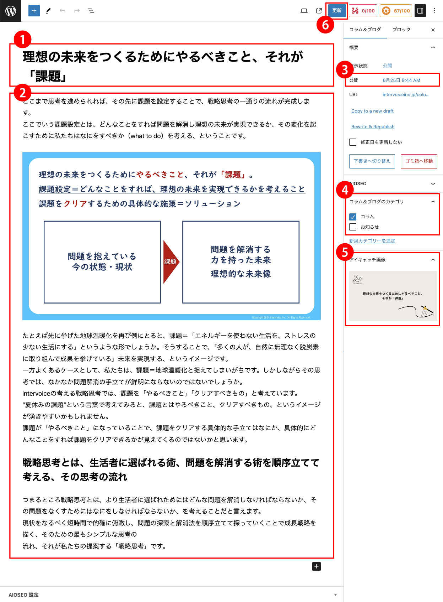
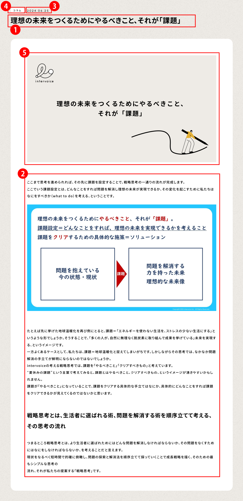
- タイトル*（必須）
記事のタイトルを入力します。
- 本文を入力*（必須）
記事の本文になります。
ブロックを挿入する際は、ブロックを挿入したいところで、「/」（半角スラッシュ）を入力してください。
「見出し」の追加方法
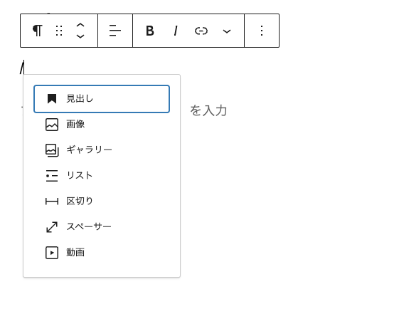
「/」（半角スラッシュ）を入力して表示されたリストの中から、「見出し」を選択します。
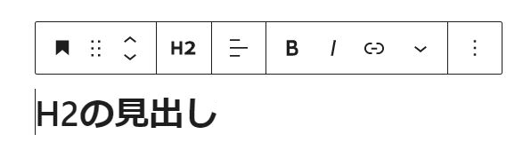
上記画像のように「H2」と表示され、入力した文字が大きく表示されます。
「H2」「H3」「H4」のサイズ比較
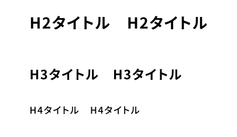
見出しが入力後もレベルを変更できます。
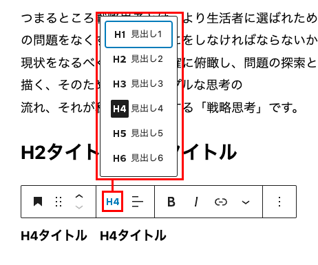
文章を挿入する際は、文章を挿入したいところで、「段落ブロック」を追加してください。
「段落ブロック」の追加方法
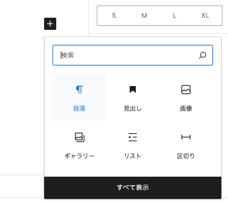
画像を挿入する際は、画像を挿入したいところで、「画像ブロック」を追加してください。
「画像ブロック」の追加方法
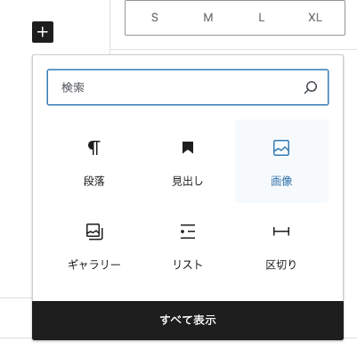
「＋」ボタンを押して「画像」をクリックします。
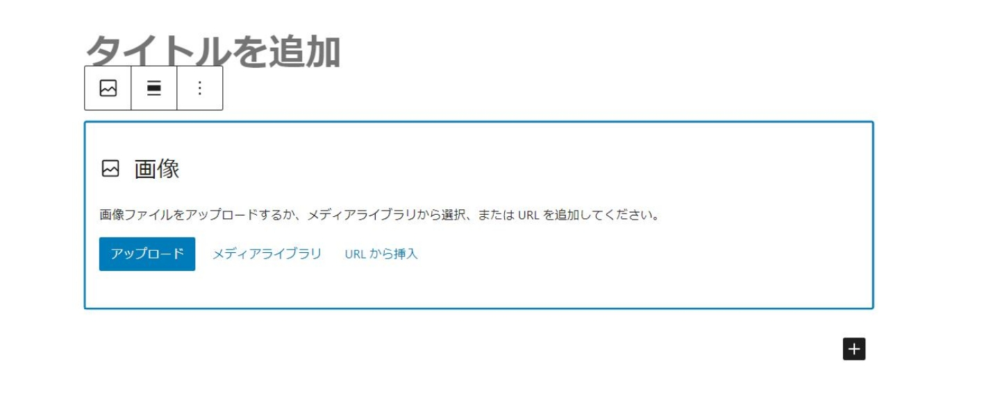
画像入力用のブロックが作成されるので、任意の画像を選択してください。
※画像の詳しいアップロード方法はこちら
※画像のリサイズ方法はこちら
リストを挿入する際は、リストを挿入したいところで、「リストブロック」を追加してください。
「リストブロック」の追加方法
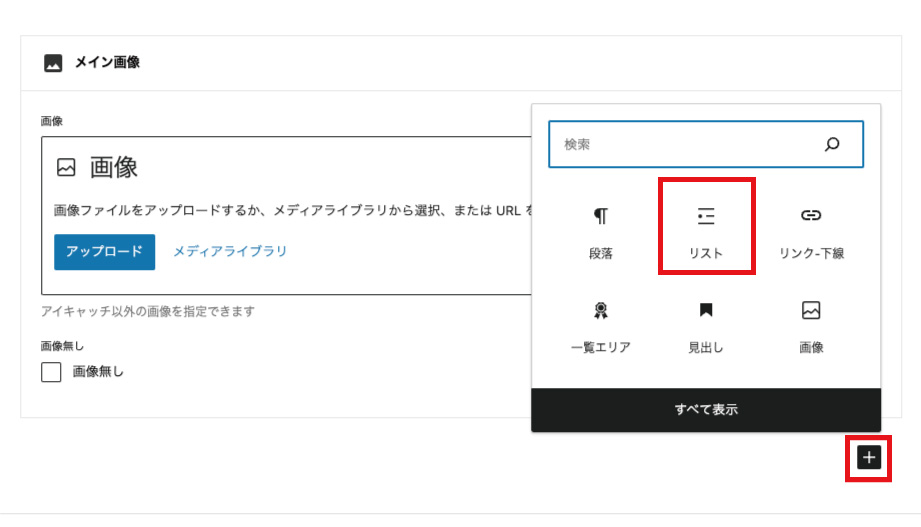
入力例
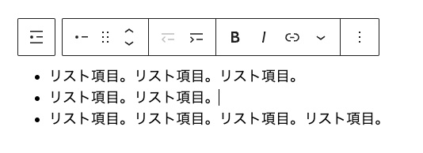
入力例→出力結果
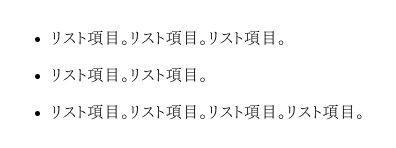
リストを挿入する際は、リストを挿入したいところで、「リストブロック」を追加してください。
「リストブロック」の追加方法
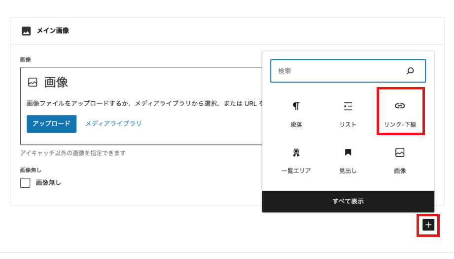
入力例
・URL：リンク先URLを入力してください
・リンクテキスト：任意のテキストを入力してください
・新規ウィンドウで開く：リンク先を新規ウィンドウで開く場合は有効にしてください。
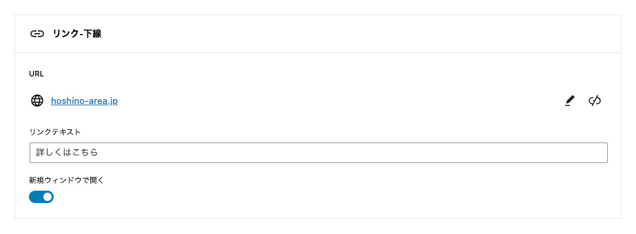
入力例→出力結果
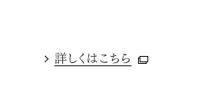
- 投稿年月日・投稿時刻
投稿日・投稿時間を編集できます。
- カテゴリ
コラム＆ブログの分類（カテゴリ）を選択してください。
複数選択することができます。
- アイキャッチ画像*（必須）
「アイキャッチ画像を設定」を選択し、画像を設定します。
一覧画面で表示されるサムネイル画像になります。
OGP画像としても流用されます。
初期状態では、詳細ページのメイン画像として使用されます。
- 公開*（必須）
青い「公開」ボタンを押してください。記事が公開されます。
公開日時が新しいものから順番にHP上に並びます。
- 公開した「コラム＆ブログ」を編集・削除する
※編集方法はこちら